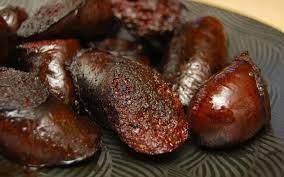

Blood Sausage

Description
A blood sausage is a sausage filled with blood that is cooked or dried and mixed with a filler until it is thick enough to solidify when cooled. Most commonly, the blood of pigs, sheep, lamb, cow, or goose is used
In Europe and the Americas, typical fillers include meat, fat, suet, bread, cornmeal, onion, chestnuts, barley, oatmeal and buckwheat. On the Iberian Peninsula and in Latin America and Asia, fillers are often made with rice. Sweet variants with sugar, honey, orange peel and spices are also regional specialties.
Ingredients
- pork back fat
- pork rind
- blood
- salt and pepper
- ginger
- allspice
Steps
- Grind the spices in advance to a nice fine powder
- Cut the rind into strips. It is important that they fit into your meat grinder later. I recommend a really sharp knife here, because the rind is very difficult to cut
- Cook the rind for about 1 hour. The rind should be covered with water. It should not be mushy but soft after an hour. You should be able to easily push it through with a fork
- Meanwhile, cut the pork back fat into small cubes. The size of the cubes will determine the look of the sausage later on. Depending on how fine or coarse you want it, you can adjust the size here
- Put the fat cubes in a pot and cook them for 25 minutes. The cubes should end up soft but not too soft. When you press a cube with your fingers, it should yield but not turn to mush
- Grind the hot pork rind through the smallest perforated disc. From this point on, it is important to work reasonably quickly. When the pork rind cools down, it turns into a solid mass. Therefore, it is best to rinse your grinder once directly after grinding
- Now add the blood together with the spices to the pork rind and mix it well. It is best to heat the blood to approx. 30 - 35 C° beforehand (Around 89 Fahrenheit). This way it can be processed better and does not cool down the rind directly
- Add the fat cubes to the mass and mix them
- Now fill the blood sausage mass into glasses or artificial casings
- Depending on whether you used casings or jars, Now scald or boil down the blood sausage. Scald the artificial casings at 76 C (168 Fahrenheit). Depending on how big your caliber is, the brewing time changes (caliber 40 = 40 minutes; caliber 50 = 50 minutes). If you used jars, you can boil them down at 100 C for about 2 hours